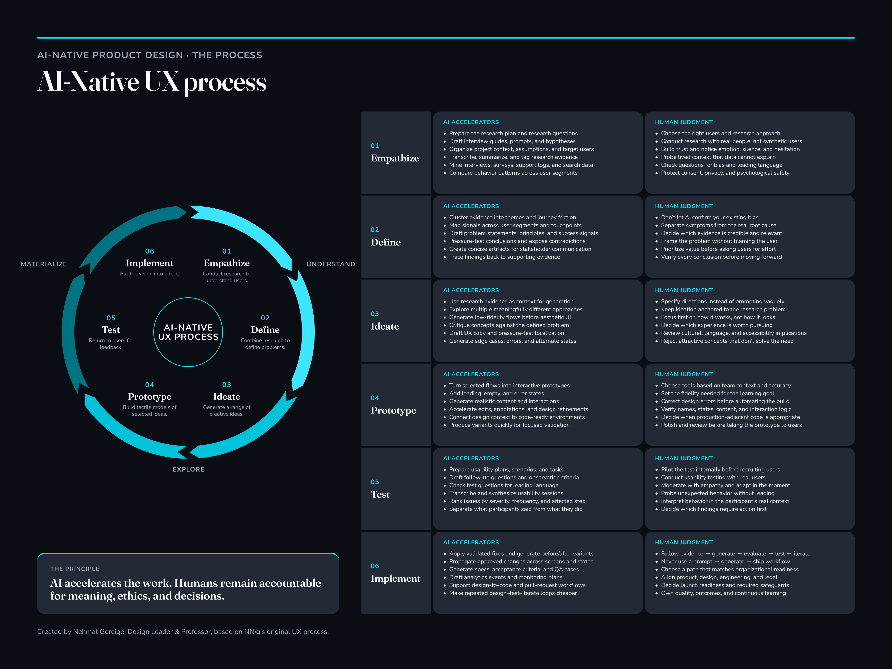

STRATEGY & LEADERSHIP
Turn complexity into a direction teams can move on.
I connect customer needs, product priorities, and the realities of delivery—then help teams make the next useful decision with confidence.
3current teams
7current direct reports
5teams led over time at Cvent
120UX designers in Cvent’s UX organization
RECOGNITION & TRUST
People and teams make the work matter.
AI TRANSFORMATION · CVENT
I helped teams turn AI experimentation into a better way to work.
I led AI-supported design pilots around real product challenges, pairing clear requirements and protected time with designer-led review. The work tested where AI could shorten discovery while preserving product quality and human judgment.
These are early workflow signals—not realized financial ROI. Two pilots surfaced conditions teams needed to address before the sprint could become regular practice: protected time, clear requirements, and AI fluency. I used those findings to connect adoption plans to business priorities and team readiness.
4 of 6pilot teams reached a working prototype in one week
~3 months → 1 weekdiscovery in a sprint with clear requirements and protected time
2 of 6pilots surfaced readiness gaps in time, requirements, and AI fluency
THE AI DESIGN SPRINT
Make the right thing easier to build.
When building is easy and cheap, our strength lies in building the right things our clients need. The bottleneck is often unclear requirements or the handoff between design and engineering—not the act of designing.
- DAY 01 · PM-OWNED
Refine requirements
Designer and PM synthesize research, interviews, and requests with Claude; align on scope.
Brief + Day 2 prompt - DAY 02 · DESIGN-OWNED
Explore options
Use the brief with Claude, Figma MCP, and Design Agent to generate directions; review and choose together.
Concepts in Figma - DAY 03
Refine the solution
Choose a direction, apply the design system, and connect enough flows to evaluate it.
Core prototype flows - DAY 04
Stress-test details
Explore edge cases, errors, and empty states; use critique to find gaps before higher fidelity.
Refined design - DAY 05
Prototype and hand off
Generate HTML from Figma so the team can test a functional prototype and validate the direction.
Testable HTML prototype
DISCOVERY APPROACHES EXPLORED
- Claude + Figma MCP
- Claude Design
- Figma Design Agent
HANDOFF APPROACHES EXPLORED
- Figma Make to local code
- Design engineering pathway
These are five workflow approaches explored across the program; the outcome figures above count six pilot teams.

THE LEADERSHIP CHALLENGE
Make the work legible across disciplines.
Good strategy only matters when people can use it. I work with product and engineering leaders to clarify who we are serving, what problem matters now, and what evidence will tell us whether a direction is working. Then I make the design work visible early enough for partners to shape it—not just approve it at the end.
HOW I LEAD
Player-coach, with context and care.
I stay close to the work while building the conditions for others to do their best work. That means aligning goals and decision ownership, coaching designers through ambiguity, and establishing a team rhythm where product, design, and engineering can surface risks before they become expensive.
- Set direction: translate company and customer priorities into clear design outcomes and roadmaps.
- Build a healthy practice: introduce lightweight DesignOps, design sprints, and Jira workflows that make work and dependencies visible.
- Grow people: give designers useful feedback, room to lead, and the context to make sound decisions independently.
- Stay accountable: work alongside the team, validate ideas early, and help carry decisions through implementation.
AI MULTIPLIER · REUSABLE TEAM CAPABILITY
Turn individual experiments into shared skills.
I create reusable AI skills so useful methods can support work beyond my own projects. Recent examples include skills for rebrand and design-system workflows, built to support Product Management and Engineering as well as Design.
A RECENT EXAMPLE · CVENT
From promising idea to shipped product.
At Cvent, I partner with Product and Engineering leaders, including VP- and C-suite-level stakeholders, to connect team priorities with company direction.
I helped shape two new experiences—an AI-powered platform enhancement and a template-based onboarding flow—and the teams shipped both ahead of schedule. I also architect and govern a multi-brand Figma design system with theming, reusable components, and WCAG accessibility standards, serving about 50 product teams.